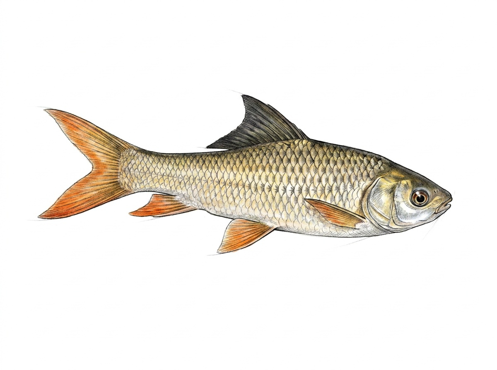

Rohu
Labeo rohita
The Rohu is a large freshwater carp introduced to Sri Lanka from the Indian subcontinent for aquaculture and inland fisheries. It is now widely found in reservoirs, lakes, irrigation tanks, and slow-moving rivers across the island. It prefers warm freshwater habitats with moderate water flow, open areas, and abundant natural food sources. The Rohu is mainly a mid-water feeder and has an omnivorous diet consisting of algae, aquatic plants, plankton, decaying organic matter, and small aquatic organisms. It is a fast-growing species that usually forms schools, especially during its younger stages. Like other major carps, it plays an important role in freshwater food production due to its large size and adaptability. In Sri Lanka, the Rohu is one of the most important introduced carp species used in inland fisheries and aquaculture because of its growth rate, meat quality, and ability to adapt to local conditions. However, as an introduced species, it may compete with native freshwater fishes for food and resources, especially in habitats where populations become abundant.